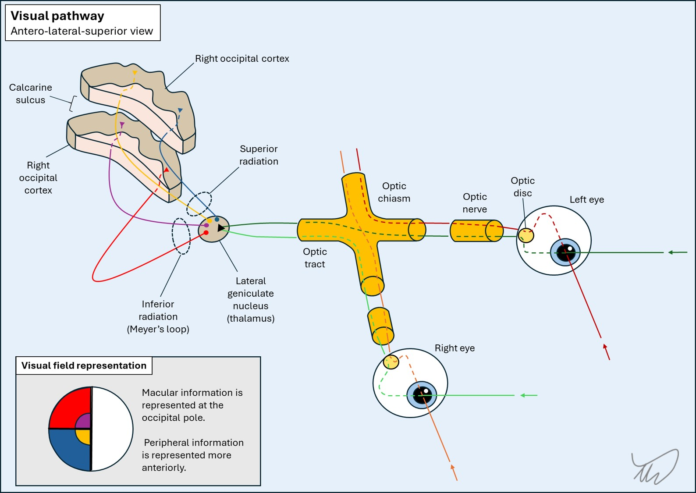

Case 8. Bumping into things
Where is the lesion?
The problem is a visual field defect. We can localise this.
LateralisationFirstly, it is homonymous - so the lesion is posterior to the optic chiasm, somewhere - from this point on, all the fibres from the left visual field (from both eyes) travel on the right side, initially in the optic tract and then in the brain itself.
LatitudeSecondly, the inferior quadrant of vision is affected. After the lateral geniculate nucleus in the thalamus, where the first-order fibres synapse, the second-order fibres pass out as the optic radiation in the retrolenticular part of the internal capsule, then separate into two radiations - the inferior quadrant of vision is carried in the superior radiation and the fibres travel in the parietal lobe on their way to the occipital cortex, where the fibres terminate. Those from the inferior quadrant terminate above the calcarine sulcus.
The opposite happens with the fibres carrying vision from the superior quadrant, which travel in the inferior radiation (Meyer's loop) through the temporal lobe and terminate in the occipital cortex below the calcarine sulcus.
There is anatomical division of the termination point of fibres on an anterior-posterior line in the cortex according to the part of vision they carry. Those carrying the more peripheral parts of vision terminate further forward, and those carrying central (macular) vision are further back, at the occipital pole.

Here, the problem is a left homonymous inferior quadrantanopia, so the lesion must be in the right superior radiation.

 Anosoagnosia - lack of awareness of visual loss
Anosoagnosia - lack of awareness of visual loss
One further point is worth making. The history here is of the consequences of a visual field defect - rather than noticing missing vision. This is relevant. Visual field defects coming from the brain (i.e. behind the optic chiasm) often are not noticed as missing vision - rather, people bump into objects they don't notice in their periphery.
The most extreme example of this happens in bilateral cortical blindness when people are unaware they have lost vision - a type of anosoagnosia, or lack of awareness of a deficit - and may even believe they can still see, which is called Anton-Babinski syndrome.
This is different to what happens with more anterior problems - for example, people with problems in or near the eye such as retinal detachment, glaucoma and optic neuritis, are often aware of significant visual loss in the affected eye, while people with brain-related field defects may not be. People are more likely to present with symptoms of visual loss - rather than its consequences.
SummaryThis patient has a left homonymous inferior quadrantanopia – so the superior radiation (between the parietal and occipital lobes) in the right hemisphere is implicated. There are no other deficits here, so we can't narrow it down any further by identifying associated adjacent structures.
What is the lesion?